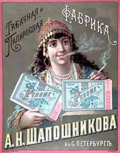

Табачный капитан
Марина
Романова
С сайта Pravda.RU"
2001.12.03
Заслуги и папиросы Александра Шапошникова приписали Кларе Цеткин

Историки не знают точно, кто первым закурил трубку на
невских берегах, но то, что петербуржцы курили с давних пор - в этом они не
сомневаются. И сколько бы ни предупреждал Минздрав, все равно заядлых
курильщиков меньше не становится - такова уж натура привычки, которая, как
известно, вторая натура.
А поскольку табачок всегда был в цене в Петербурге, то на спрос рождается и
предложение. Правда, сперва табак в северную столицу завозили - первая табачная
фабрика в Петербурге была основана только в 1825 году. Принадлежала она купцу
первой гильдии Василию Жукову. А спустя год другой купец, Климент Соколов,
открыл еще одну фабрику. C тех пор дело шло по нарастающей, и к началу ХХ века
в Петербурге работало девять больших табачных фабрик. Одной из самых
значительных была фабрика Шапошникова.
И старец великий им путь озарил...
Начиная свое дело, Александр Николаевич Шапошников уже имел свой табачный
магазин. Каким образом он накопил первоначальный капитал - история об этом
умалчивает. Может быть, как и огородный магнат Аврамий Ушаков, "в лаптях
пришел в Петербург", а может, помогли ему мистические силы. Ну не могла
история табачной фабрики обойтись без чудесного божественного промысла!..
Будто бы гулял однажды теплым августовским днем 1763 года в лесу возле
Петербурга секретарь просвещенной государыни Екатерины Великой - господин
Теплов, и навстречу ему показался древний старец и сказал: "Имя твое будет
славно! А на этом месте через 150 лет будет процветать величайшая и первая по
качеству своих изделий табачная фабрика". Правда, старик напутал в годах -
фабрика Шапошникова появилась в этих местах не через полтора столетия, а на три
десятилетия раньше, но во всем остальном не обманул. А легенда эта была
изображена на шапошниковских сигаретах "Осман" и "Тары-бары".
Но если серьезно, то дело было так: приехала в столицу купчиха Пелагея Шапошникова
из подмосковского городка Коломны, очевидно, с некими накопленными деньгами,
поскольку уже вскоре со своими сыновьями Александром и Владимиром открыла
торговлю в двух табачных лавках на Караванной улице. Дела, по всей видимости,
пошли неплохо, и в начале января 1873 года Александр Шапошников, унаследовавший
дело почившей матушки, по договору с купцом Шопфером открыл в Чернышевом
переулке, в помещении сигарной фабрики того самого Шопфера, специальное
отделение для приготовления курительного табака и папирос. Именно с этого
знаменательного дня, 2 января, и начался отсчет будущей фирмы под маркой
"А.Н.Шапошников".
Табачная купчиха получала серебро и золото
Cперва на фабрике было только двенадцать рабочих, но уже через четыре года их
стало двести. Фабрика стремительно росла, и для нее был куплен громадный дом на
Клинском проспекте. В новом здании все уже было готово к открытию работы 10
апреля 1881 года, но, как известно, на все есть промысел Божий. Не довелось
основателю фабрики и "первому ее труженику" Александру Шапошникову
торжественно разрезать ленточку. Захворав простудой, осложнившейся брюшным
тифом, он скончался, когда ему было пятьдесят лет.
Но со смертью своего основателя фабрика вовсе не заглохла, перейдя, вместе со
всем имуществом, в надежные руки его вдовы - купчихи Екатерины Шапошниковой,
принявшей на себя лично дальнейшее ведение дела и избравшей себе правой рукой
своего брата.
Купчиха вникала во все дела и не скупилась на новшества, понимая, что они
непременно окупятся и принесут доход. К примеру, именно на ее фабрике ручная
клейка гильз была впервые в Петербурге полностью заменена на машинную.
Изделия шапошниковской фабрики продавались повсюду в Российской империи и даже
сбывались за границу, преимущественно в Германию. За высокое качество продукции
фирма была не раз удостоена наградами - серебряной медали на Всероссийской
художественно-промышленной выставке в Москве в 1882 году и золотой медали на
Всероссийской выставке в Нижнем Новгороде в 1896 году.
"Эксплуататоры трудового народа"
Нет, не будем приукрашивать историю - конечно, Шапошниковы, как и другие
столичные предприниматели, заставляли своих рабочих вкалывать в тяжелых
условиях по четырнадцать часов в сутки, а платили им едва ли не гроши. Но они
вовсе не были недоумками и понимали, что, если будут измыватся над рабочими, то
наживут себе злейших врагов, и неизвестно еще, чем все кончится.
"Призрак" ведь уже вовсю бродил по Европе...
Поэтому энергичная купчиха стала заботиться о жизни и быте рабочих - устроила
для них при фабрике лечебницу и аптеку, где бесплатно выдавались лекарства, а
также перевязочные материалы - травматизм в ту пору был велик. Здесь же
постоянно дежурили врач и фельдшер. К удовольствию матерей, работавших на
фабрике и не имевших средств оставлять маленьких детей дома в рабочие дни, были
устроены ясли.
Понимала Екатерина Шапошникова и то, что хороший работник должен быть трезвым,
поэтому делала все, чтобы отвлечь своих рабочих от кутежей и пьянства: в
праздничные дни устраивались религиозно-нравственные беседы, была организована
библиотека, где книги бесплатно выдавались на дом. А когда в январе 1898 года
торжественно праздновалось 25-летие основания фабрики, купчиха сделала крупное
пожертвование отделению Всероссийского общества трезвости на устройство дешевых
квартир, которыми могли бы пользоваться фабричные рабочие - правда, конечно, не
все, а некоторые, кто был на хорошем счету и не был замечен в крамоле.
Деньги для механика Семенова
Для некоторых фабрика Шапошникова стала не только настоящей "школой жизни",
но и взлетной полосой. Таким был удачливый коммерсант Иван Семенов, который
после окончания Технологического института по рекомендации профессора Лабзина
поступил не куда-нибудь, а именно на табачную фабрику Шапошникова - механиком.
Именно он в 1889 году сконструировал более производительную гильзовую машину
для табачной промышленности.
Чем-то приглянулся купчихе Иван Семенов, и не зря она разглядела в нем деловую
жилку - сперва дала деньги, чтобы тот смог открыть собственную мастерскую по
производству гильзо-мундштучных и табачно-набивных машин, ставшую потом крупным
заводом. К первой мировой войне Семенов владел уже механическим заводом с 450
рабочими, лесопильным заводом и столярной фабрикой в Старой Деревней - вот что
значил шапошниковский первоначальный капитал! Фирма "И.А.Семенов"
была удостоена наград на Всероссийской выставке в Нижнем Новгороде в 1896 году,
на Парижской выставке 1900 года и других. Традиции ее продолжаются и сегодня:
это объединение "Ленполиграфмаш" на Карповке.
Дядя Михей против дяди Корнея, или Битва на рекламном фронте
Как и теперь, во времена столетней давности табачной рекламы было
предостаточно. Каждая из столичных фабрик расхваливала свой товар и
развертывала целые баталии за кошельки столичных курильщиков. Обычно папиросы
продавались в пачках по 10 штук за 5-6 или 10 копеек, а всего, по подсчитам
статистиков, в начале 1910-х годов курящий Петербург потреблял сто миллионов
папирос в месяц. Причем лучше всего шли папиросы низших сортов, которые стоили
меньше 5 копеек за десяток - из общего числа потребления они занимали до 75%.
Впрочем, и высшие сорта табака потреблялись в столице в очень больших размерах.
Все без исключения табачные короли Петербурга - "Лаферм", "Саатчи
и Мангуби", "Оттоман", братья Шапшал и другие наперебой
объявляли свой товар лучшим и призывали его "настоятельно требовать
везде". Кто-то в прозе, кто-то в стихах. Но, пожалуй, оригинальнее всех
было именно товарищество Шапошникова, в котором тогдашние специалисты по PR-технологиям
придумали даже свой рекламный персонаж - дядю Михея, рассказывавшего всякие
байки и небылицы про лучшие марки шапошниковского табака, которых насчитывалось
не меньше двух десятков. Среди них были такие красивые названия, как
"Жасмин", "Осман", "Меланж", "Десерт",
"Каир", "Шик".
К примеру, не могло не заинтриговать читателей газет сенсационное сообщение о
морской змее. Это страшное чудовище будто бы появилось в Нижнем Новгороде, при
слиянии Оки с Волгой. Погнавшийся за змеей отважный чин речной полиции сразил
ее наповал метким выстрелом. И что же оказалось: "Будучи прибуксирована к
берегу, она оказалась колоссальной длины, и самое удивительное то, что от ее
головы по всему туловищу шла надпись: Курите только вкуснейшие папиросы
"Осман"". Вот она - проделка дяди Михея, который далее отмечал,
что и без этой страшилки публика "предпочитает папиросы "Осман"
всем другим маркам". Дядя Михей, как было известно всем, никогда не врал:
"Слово дяди Михея твердо, как сталь".
Из другой рекламы узнаем, что даже французский президент Пуанкаре официально
поблагодарил дядю Митяя за превосходнейшие поднесенные ему папиросы
"Осман" и "Меланж". За подписью дяди Михея появлялись такие
незатейливые стихи:
"Всегда вперед "Десерт" идет:
То качество причиной.
За вкус "Каир" берет весь мир;
Сработан он машиной".
Или "студенческая трилогия", в подражание знаменитому тогда поэту
Н.Агнивцеву:
"Сегодня утром почтальон
Принес письмо, в письме - поклон
И целых пять рублей!!!
Богат, как сам Пьермон Морган,
Курю я: "Пери" и "Осман"
И никаких гвоздей!!!"
А вот еще образец творчества дяди Михея: "Табак "Албанский" -
идеал, любимцем сразу всюду стал". Или такой: "Курите "Еву"
наслажденье гласит общественное мненье!"
Байки от дяди Михея успешно конкурировали со стишками от другого рекламного
персонажа - дяди Корнея, который расхваливал табачок от фабрики "Лаферм".
"Загнивающий капитализм" образца 1913-го
Начало 1910-х годов в табачной промышленности России и Петербурга
ознаменовалось полосой преобразования из единоличных табачных фабрик
акционерных обществ, ожесточенной конкурентной борьбой между ними и поглощения
сильными предприятиями более мелких. В омут этой борьбы окуналась и фабрика
Шапошниковой, на базе которой в 1911 году было создано товарищество табачной фабрики
"А.Н.Шапошников" с капиталом в 3,5 миллионов рублей.
Спустя два года оно приобрело все паи товарищества Габай в Москве, а также
вошло в состав Русской табачной компании - огромного синдиката, созданного в
Англии под руководством Русско-Азиатского банка и при участии Русского для
Внешней торговли банка. В него вошли более десяти крупных табачных фабрик
Петербурга, Москвы, Ростова-на-Дону. Учредительный акт и устав русского
табачного синдиката, получившего название "The Russian Tobacco Company Limited"
были утверждены в Лондоне 2 сентября 1913 г., согласно английским законам о
компаниях.
Обороты шапошниковской фабрики росли, но впереди уже маячила революция...
Табачок от Льва Троцкого
После революции предприятие было национализировано новыми властями и в вихре ревоюционных
страстей получило имя одного из вождей революции Льва Троцкого. В Ленинграде
1920-х годов он был весьма популярен - немногие уже теперь помнят, что Гатчина
в ту пору звалась Троцком. Когда он попал в опалу, то фабрику переименовали в
честь Клары Цеткин. Под этим именем она тихо и спокойно просуществовало до
самого конца социализма, но тут в России снова грянул капитализм. Пришло время
снова акционироваться.
Сегодня бывшая шапошниковская фабрика хороша известна петербуржцам под названием
"Нево-табак". Она сотрудничает с иностранными компаниями - английской
"Ротманс" и шведской "Свенска-табакс", и совместно с каждным
из них производит свой вид табачных изделий. А самая популярная сегодня марка,
как мне сообщили на фабрике "Нево-табак", - это сигареты
"Арктика". Cловом, как говорил когда-то "дядя Михей":
"Наслажденье, не папиросы! Восхищенье, не табак! Убежден, что это
так!"
На главную